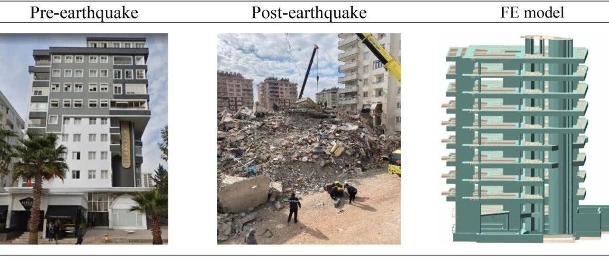

推荐阅读：2023年土耳其地震建筑倒塌原因探究：400栋钢筋混凝土建筑倒塌数据的震后分析启示
【译者注：2023年土耳其地震发生后，震害分析论文众多。但是本文的系统性和工作深度尤为突出，也很值得中国同行借鉴参考。本文采用AI辅助翻译】

https://doi.org/10.1016/j.jobe.2025.112660
Received 15 November 2024; Received in revised form 5 March 2025; Accepted 12 April 2025; Available online 17 April 2025
一、引言（摘译）
本研究旨在提供创新视角以丰富现有文献。研究范围涵盖：实地考察、建筑基础信息与官方文件核查、建筑内混凝土与钢筋等建材性能检测。根据建筑区位依照抗震规范评估土壤特性，最终通过有限元分析评估建筑性能。在此框架下，重点研究RC建筑倒塌的主因，检验其与建造时现行法规及抗震规范的符合性。通过揭示RC建筑抗震薄弱环节，本研究有助于深入理解地震活跃区RC建筑的脆弱性，并为其他地震区同类建筑提供韧性提升策略参考。据我们所知，结合有限元建模、材料检测与土壤调查的多维度建筑研究尚属罕见，本研究的创新性或将填补这一空白。
二、土耳其抗震规范发展沿革
地处阿尔卑斯-喜马拉雅地震带的土耳其长期饱受地震灾害侵扰，由此不断修订抗震规范以减轻震害。图1展示了土耳其抗震规范的历次革新与重要地震事件。自1923年建国至1940年间，该国建筑未采用任何抗震规范。1939年东土耳其发生的7.9级埃尔津詹大地震造成约3万人遇难，这场灾难促使土耳其于1940年颁布首部《土耳其抗震规范》（TEC 1940）。该规范主要借鉴意大利抗震法规理念，并根据本国国情进行了适应性调整。
随着地震工程学发展、计算机技术普及、建材工艺进步及经济水平提升，土耳其相继颁布了TEC 1968、TEC 1975、TEC 1998、TEC 2007，以及现行有效的《2018土耳其建筑抗震规范》（TBEC 2018）。如图1所示，地震事件本身对规范革新具有显著驱动作用。
尽管土耳其抗震规范历经多次重大修订，但历史震害调查与2023年卡赫拉曼马拉什地震均表明，某些结构缺陷（混凝土与钢筋质量低劣、强梁弱柱节点、短柱效应、箍筋不足、软弱层、梁柱节点失效等）仍持续存在[41,[46], [47], [48], [49], [50], [51], [52], [53]]，这凸显出设计与施工实践仍需持续改进。TBEC 2018实施四年后发生的卡赫拉曼马拉什地震会否引发该规范修订或新规制定，尚待历史验证。

图1. 土耳其抗震规范沿革与重大地震事件
三、地震学【略】
四、地面运动和反应谱【略】
五、钢筋混凝土建筑特征分析
卡赫拉曼马拉什地震对震中周边11个省份造成破坏。该地区建筑存量主要由钢筋混凝土（RC）建筑构成。本节详述研究范围内经全面检测的RC建筑共性特征。本研究调查了卡赫拉曼马拉什（168栋）、阿德亚曼（126栋）、加济安泰普（55栋）和哈塔伊（51栋）共计400栋倒塌RC建筑（图12）。为确保研究一致性，样本筛选标准包括：（1）损毁程度（仅选取2023年地震中完全倒塌并造成人员死亡的建筑）；（2）结构类型（仅选择RC建筑以保证结构分析同质性，聚焦受灾地区常见建筑类型）；（3）建筑基础信息（来自当地居民及官方文件）。研究流程包括：首先收集建筑现场调查资料、基础信息和官方文件，继而测定建筑内混凝土与钢筋等建材性能，根据地貌特征参照抗震规范评估土壤属性，最后通过有限元分析评估结构性能（图13）。有限元分析采用土耳其现行抗震规范，依托专业建筑系统建模软件ideStatik[63]完成，重点验证231栋RC建筑在静动态荷载下是否符合建造当年的规范要求。

图12 建筑分布示意图

图13 研究实施步骤
建筑许可作为地方政府颁发的正式建设凭证，对新建、重大改建或扩建工程具有强制效力。无证建设或擅自改动承重体系将引发法律纠纷、安全隐患及产权问题。图14a显示四省份无证建筑比例居高不下，相关行政部门对违建行为的监管缺位与责任主体的违规施工共同导致了建筑倒塌事故。

图14 研究对象特征统计
按建造时适用的抗震规范划分（图14b），倒塌RC建筑中采用1975版土耳其地震规范（TEC 1975）设计的占比最高，而采用2018版规范（TBEC 2018）的最低。该结果不应简单归咎于TEC 1975的技术缺陷，其深层原因包括：规范执行期内监管体系缺失、商品混凝土应用局限、计算机分析技术未普及等。随着土耳其抗震规范的迭代更新，RC建筑震损风险已显著降低。为减少未来地震损失，亟需对2000年前建造的（即规范体系完善、质量监管强化及建材升级之前的）老旧建筑进行加固或拆除重建。
图14c-d分别显示依据TEC 1975和TEC 1997-2007划定的建筑抗震分区。土耳其1972年与1996年版地震区划图将全国分为五级（I-V区），对应的地震动峰值加速度分别为0.03-0.10g和0.10-0.40g。2018版规范（TBEC 2018）则改用谱加速度值（PGA）替代传统分区表述。图14e-f呈现了研究对象的层数分布与基础类型特征。地下室作为影响RC建筑抗震性能的关键参数，其存在可显著提升结构性能[64-66]，样本中地下室分布见图14g。有限元分析显示，231栋建筑中大量配置了对抗侧力至关重要的RC剪力墙（图14h），但需注意：剪力墙与其他竖向承重构件比例及平面布置方案同样影响整体性能。某些情况下，导致刚度中心与质量中心偏离的剪力墙布局可能产生与预期相反的负面效应。
六、建筑结构性能评估
本研究通过核查RC建筑是否符合建造时的现行法规与抗震规范，旨在揭示导致混凝土结构倒塌的关键参数。对受卡赫拉曼马拉什地震影响的卡赫拉曼马拉什、阿德亚曼、哈塔伊和加济安泰普四市的400栋倒塌RC建筑进行了详细调查。本节通过图表形式呈现许可证阶段、有限元分析阶段、施工阶段及竣工后各环节的评估结果，并在相应标题下分别解析研究结论。
6.1 基于许可证阶段的评估
图15a显示获得附加许可证(additional building licenses)的RC建筑分布情况，表明这些建筑在获得初始许可证后，其静态设计方案发生了重大变更。这些变更对建筑抗震性能产生了负面影响。根据2007版土耳其地震规范（TEC 2007），建筑重大改造必须进行性能分析，以验证结构能否安全承载变更。该规范实施前的擅自改造被认为是导致RC建筑倒塌的重要参数之一。图15b展示了无证建筑的"建筑特赦（zoning amnesty）"申请状态【译者注：建筑特赦，是指土耳其允许建筑商通过支付费用，正式注册那些不符合规范的建筑。自1984年以来，土耳其已经实施了超过20次建筑特赦。据jacobin.com报道，赦免费住宅类房产按物业价值的 3%收取，商业建筑则按 5%收取。】

图15 建筑许可状态
土耳其居民楼普遍存在"底商上住"现象，即临街建筑将底层作为商业用途。这类楼层通常层高较大，填充墙开设车库门或大面积橱窗，导致形成"软弱层"——该层水平位移刚度降低，在地震中会产生远超其他楼层的位移。设计时未考虑的二阶效应在此显现，使地震破坏集中发生于该层。图16a显示调查建筑中底层商用比例，可见400栋倒塌RC建筑底层商用率极高。图16b进一步显示，为扩大使用面积擅自切割底层柱体的指控比例。研究证实底层商用是导致RC建筑倒塌的关键因素。建议地震活跃区禁止居住建筑底层商用，应建立纯商业用途的集中贸易中心。

图16 建筑底层使用状态
6.2 基于有限元分析阶段的评估
本研究涉及的倒塌RC建筑中72%持有许可证和工程图纸，但因部分图纸缺陷，最终对231栋建筑建立了有限元模型，采用土耳其RC设计常用软件ideStatik进行分析。图18展示部分建筑的震前、震后及有限元模型对比图。模型采用每节点6自由度（平动+转动）的3D弹性梁单元模拟梁柱，四节点壳单元模拟楼板与剪力墙。荷载根据规范自动计算生成。

图18. 部分建筑的地震前、地震后及有限元模型对比图

图19. 建筑物基本周期分布图
尽管2018版规范（TBEC 2018）规定了考虑填充墙与结构相互作用的层间位移准则，但早期规范忽视其影响。本研究231栋建筑中仅3栋适用TBEC 2018，为统一对比标准，模型未模拟填充墙但计入其重量（历史地震表明填充墙相互作用对建筑损伤有显著影响[67]）。倒塌建筑均按建造时的抗震规范要求，采用各版本规范共通的线弹性方法评估——因多数倒塌建筑依据1975版规范设计，该版本未包含非线性分析方法条款。1975/1998/2007版规范设计建筑未采用有效截面刚度系数，但2018版规范设计建筑则严格按规范要求考虑该系数。
根据建筑位置通过有限元分析获得的结构基本周期分布如图19所示。由图19可见，建筑基本周期值介于0.2秒至2.0秒之间。这些数值可与图4至图11中规定的谱加速度及结构损伤建立关联。基于本研究考察的加速度台站数据表明：当建筑物基本周期对应的加速度谱值超过设计谱值时，建筑将承受高于规范预期的地震需求。需特别说明的是，该评估基于加速度台站数据，而非建筑物实际位置。
图20展示了建筑振型分布规律。通常建筑结构的第一、第二振型应为平动形态，第三振型为扭转形态。但分析发现约50%的有限元模型建筑呈现第一振型为扭转模态的特征，这种情形将显著恶化建筑抗震性能并导致破坏。

图20. 建筑物振型分布图
扭转不规则（A1型）指地震作用下楼盖因扭转效应产生的不规则位移，当某层最大相对位移与同层平均相对位移比值超过1.2时即判定存在（图25）。软弱层不规则（B1型）指建筑某层侧向刚度显著低于相邻上层（常见于商业用途首层大开间设计），地震中该层将产生过度变形导致结构倒塌。薄弱层不规则（B2型）则指某层抗侧力承载力低于相邻上层（如停车场改造等情况），无法有效抵抗地震作用而引发严重破坏。
图26统计了按TEC 1998、2007及TBEC 2018建造的建筑中A1、B1、B2不规则类型的占比分布（134组数据，排除TEC 1975规范建筑）。分析表明：
•图26a：1998版与2007版规范建筑中分别存在58.97%和54.84%的A1型扭转不规则，说明1997-2018年间超半数建筑存在扭转风险。尽管规范允许当不规则系数＞1.2时采用特殊分析方法，但本研究倒塌建筑中多数具有此特征。建议规范应着重强调通过优化柱墙布置（使质量中心与刚度中心尽量重合）来降低扭转系数，而非单纯改变分析方法。
•图26b：1998版规范建筑中B1型占比5.13%，2007-2018年降至1.08%，2018-2023年实现100%消除，反映规范修订与施工监管的有效性。
•图26c：1997-2007年间33.33%建筑存在B2型不规则，2007-2018年锐减至7.53%，2018年后完全杜绝，印证规范革新与结构审查对提升建筑规则性的显著成效。

图26 A1（扭转）、B1（软弱层）、B2型（薄弱层）不规则建筑情况
6.3 施工阶段问题分析
钢筋混凝土承重构件中的约束钢筋（箍筋与拉筋）可抵抗剪切力、防止纵向钢筋屈曲并提高核心区混凝土的延性。这种延性特性及相应约束区的箍筋加密要求最早在1975年土耳其地震规范（TEC 1975）中提出，此后所有抗震规范均包含专项条款。图27、图28分别对比展示了TEC 1975与TBEC 2018对梁柱约束钢筋的要求。通过对倒塌建筑的对比研究发现，大部分建筑未实施约束区设计（图29），这揭示约束区缺失是导致建筑倒塌的关键因素。值得注意的是，即便按TBEC 2018设计的倒塌建筑中仍有33.33%存在约束区缺失问题（需特别说明：本节评估的建筑中仅3栋按TBEC 2018建造，其中1栋不符合约束区规范要求）。

图29 倒塌建筑约束区实施情况
箍筋细部构造（如弯钩角度）对保证构件延性至关重要。根据土耳其抗震规范，必须采用弯钩角度≥135°的封闭箍筋，该角度设计对实现轴向/侧向力作用下的延性性能具有决定性作用。图30展示了符合TBEC 2018的箍筋样本，规范要求箍筋应从外侧包络纵向钢筋且弯钩必须闭合于同一纵筋。图31a对比显示：在按1975/1998/2007规范设计的倒塌建筑中，绝大多数承重构件箍筋弯钩不符合规范要求。
箍筋在承重构件中产生的约束压力与约束钢筋位移成反比。柱构件中，约束效应主要体现在箍筋转角处及纵向钢筋通过拉筋固定的区域，因此拉筋使用对约束效应发挥至关重要。图31b显示：在可检测拉筋的倒塌建筑中，拉筋使用率普遍不足。

图31 钢筋构造情况
混凝土质量直接影响RC建筑抗震性能。规范的浇筑、振捣及养护工艺是抗震基本保障。劣质混凝土会显著降低结构完整性，大幅增加震时倒塌风险。为此，抗震规范明确了设计最低混凝土强度要求，且实际采用强度等级必须符合规范。图32a对比显示：2018年前建造的RC建筑中近50%混凝土强度未达建造时规范要求；类似地，图32b显示多数倒塌建筑钢筋等级也不合规。

图32 建筑材料性能与规范符合性对比（a）混凝土（b）钢筋
6.4 建成后违规问题调查
发现部分业主在取得许可证后擅自违规加层（图33）。这些加层多由非专业工匠施工，既增加建筑荷载又导致地震力传递异常。数据显示大量建筑在竣工后存在非法加层现象，这被认为是导致倒塌的重要原因。法规要求：任何影响结构性能的重大改造（加层、扩建、用途变更）必须重新申报许可。
7 综合讨论
建筑全生命周期包含规划许可、有限元分析、施工建造及建成后四个阶段。400栋倒塌RC建筑中各阶段错误分布如图34所示：施工阶段占43.58%、有限元分析25.57%、许可阶段24.77%、建成后6.07%。许可阶段主要问题是设计图纸深度不足及计算书缺失；施工阶段突出表现为钢筋细部构造缺陷、混凝土质量低劣、弯钩角度错误、约束区缺失及钢筋品质问题。

图34 各阶段错误分布
尽管第4章反应谱分析显示部分区域实际地震加速度超过设计取值，但这不应视为建筑倒塌的唯一原因。结合前文分析可知，各阶段失误形成"缺陷链"共同导致了灾难后果。随着新规范实施及建筑审查制度完善，预计许可与施工阶段的错误将逐步减少。
八、结论
2023年2月6日，土耳其东南部安纳托利亚地区卡赫拉曼马拉什省先后发生Mw=7.7级（帕扎尔哲克镇）与Mw=7.6级（埃尔比斯坦镇）强震。此次双震直接影响安纳托利亚东部及东南部11个省份，包括卡赫拉曼马拉什、哈塔伊、阿德亚曼、马拉蒂亚、奥斯曼尼耶、加济安泰普、尚勒乌尔法、迪亚巴克尔、阿达纳、基利斯及埃拉泽。本研究调查了卡赫拉曼马拉什、阿德亚曼、哈塔伊和加济安泰普四地共400栋倒塌的钢筋混凝土建筑，通过现场勘查、建筑基础资料与官方文件收集、材料性能与土质特性测定及三维有限元分析等手段，结合建筑落成时现行法规与抗震规范的符合性审查，揭示了导致RC建筑倒塌的核心参数。主要研究发现如下：
• 埃尔比斯坦-卡赫拉曼马拉什地震中，近场台站记录的水平和竖向反应谱均未超出抗震规范设计谱值；而帕扎尔哲克-埃尔比斯坦地震的水平与竖向反应谱在部分台站出现超设计谱现象
• 特定周期段超过设计反应谱表明：基本周期落在此区间的建筑实际承受的地震需求远超规范预期，这与基本周期接近谱加速度峰值周期段的建筑损伤程度显著相关
• 随着施工技术发展、合规建材获取难度降低、商品混凝土普及、全国性施工监管机制完善及土耳其抗震规范演进，RC建筑震损倒塌风险已显著降低
• 建筑许可是实施新建、重大改建或扩建的法定前提。无证建设或擅自改动承重体系将引发安全隐患、法律纠纷及产权问题
• 违章加层通常由非专业工匠施工，既破坏原设计参数体系，又增大了建筑自重与地震作用传递，严重危害结构安全
• 2007版土耳其抗震规范（TEC 2007）要求重大改建必须进行性能分析，此前未经安全评估的改建行为是RC建筑倒塌的重要诱因
• 商业用途底层为扩大使用空间违规截柱的现象普遍，实证表明此类商业改造与建筑倒塌存在显著关联
• 常规建筑结构第1、2阶振型应为平动，第3阶为扭转。但约50%有限元分析样本的首阶振型呈扭转特征，这种异常显著恶化了建筑抗震性能
• 地震作用下剪力是核心内力，箍筋与拉筋对其抵抗至关重要。调查发现承重构件约束区配筋构造违规（包括弯钩角度不符规范）是倒塌关键因素
• 混凝土质量直接影响RC建筑抗震能力。非2018版新规（TBEC 2018）适用建筑中，超50%样本混凝土强度等级不满足当时规范要求
• 抗震规范革新与结构审查制度实施使建筑不规则性大幅减少
• 施工阶段错误最为突出（配筋构造缺失、混凝土与钢筋质量缺陷、约束区疏漏、弯钩角度错误），许可阶段主要存在静态设计深度不足与计算报告缺失问题
基于本研究结果，若实施以下建议措施，将显著改善历次地震中暴露的问题：
• 为减轻未来地震损失，亟需对2000年前建造的钢筋混凝土建筑（该年份被视为建筑规范完善、质检制度推行及优质建材普及的重要节点）进行短期内的全面加固或拆除重建。
• 钢筋混凝土建筑竣工后，须以10-15年为周期开展建材检测与性能评估，实施全生命周期结构健康监测。
• 地震活跃带区域的居住建筑底层应严禁商用，需规划集中式商业中心满足经营需求。
• 现行规范虽允许扭转不规则系数＞1.2的建筑继续采用动态分析法评估，但本研究发现超半数倒塌建筑存在此类缺陷。建议修订规范时着重强调：应通过优化柱网及剪力墙布局（使质量中心与刚度中心最大限度重合）降低扭转不规则系数，而非仅变更分析方法。
参考文献【略】
---End---
建筑结构生成式智能设计软件：
相关研究
学术报告视频
专著
人工智能与机器学习
---结构智能设计
---其他土木工程领域人工智能研究
城市灾害模拟与韧性城市
高性能结构与防倒塌
新论文：抗震&防连续倒塌：一种新型构造措施
长按识别二维码，关注我们的科研动态